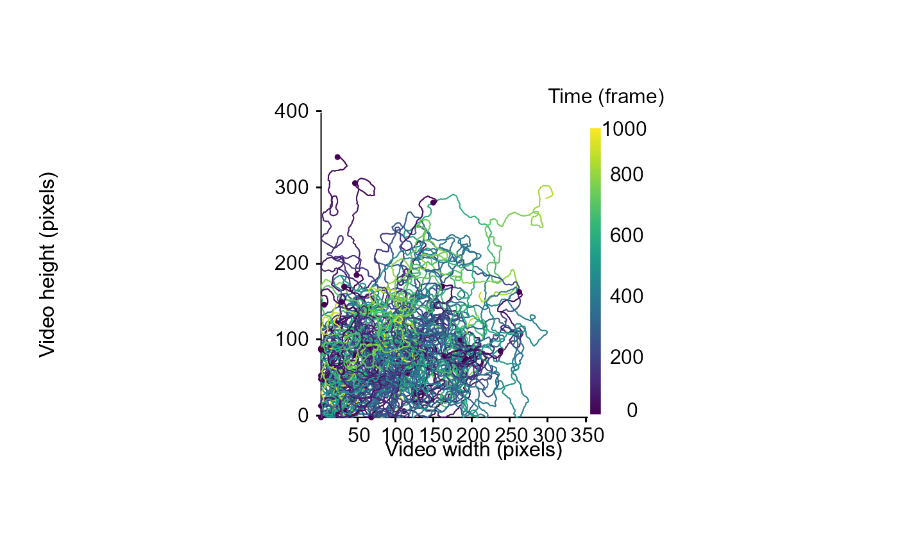
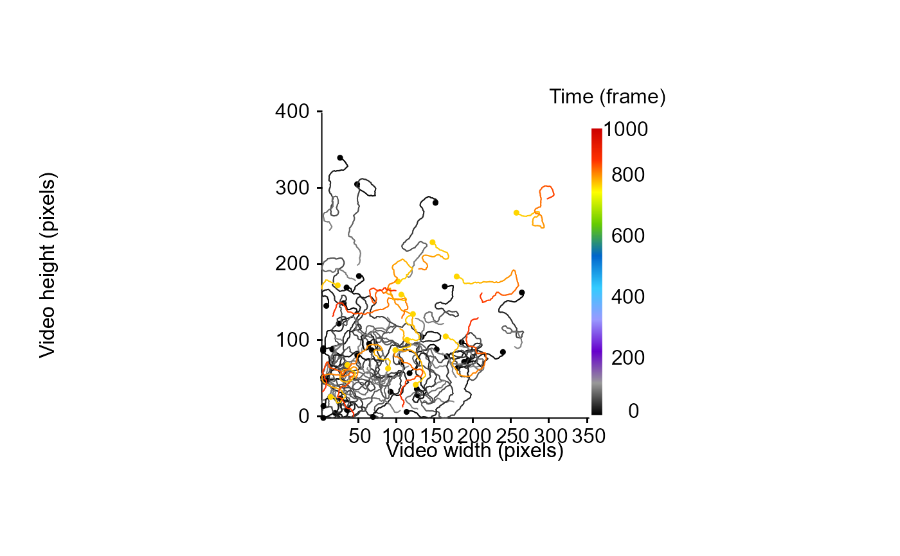
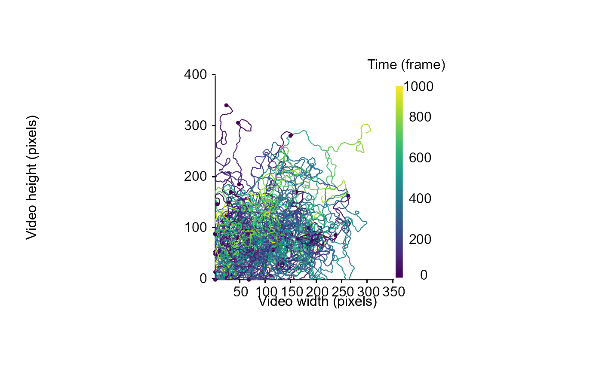
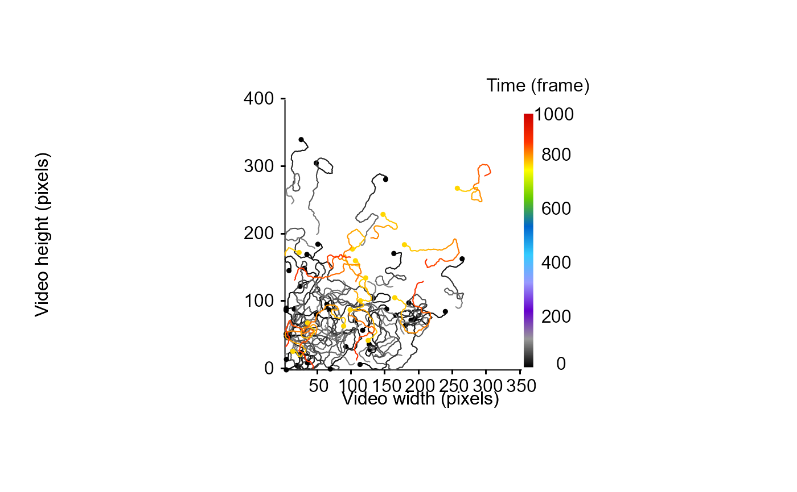

Given a list of tracking tracklets containing cartesian coordinates, this function returns a plot with tracklets represented as a sequence of segments connecting cartesian coordinates between successive frames. Tracklets are colored according to the time.
Usage
drawTracklets(
trackDat,
selTrack = NULL,
imgRes = c(NA, NA),
timeWin = list(c(0, Inf)),
timeCol = "frame",
colGrad = c("#000000", "#999999", "#6600CC", "#9999FF", "#33CCFF", "#0066CC",
"#66CC00", "#FFFF00", "#FF3300", "#CC0000"),
colId = NULL,
add2It = NULL,
srt = 0,
lwd = 1,
main = "",
xlab = "Video width (pixels)",
ylab = "Video height (pixels)",
legend = TRUE,
legend.title = NULL,
cex.axis = 1,
cex.main = 1.25,
cex.lab = 1,
cex.leg = 1,
ncol.leg = 1,
cex.start = 0.5,
progress = TRUE
)Arguments
- trackDat
A list of data frame containing tracking information for each tracklet (i.e., x.pos, y.pos).
- selTrack
A vector of either numeric values or character strings, the number or the id of the selTrack to plot (optional).
- imgRes
A vector of 2 numeric values, the resolution of the video used as x and y limit of the plot (i.e., the number of pixels in image width and height). If imgRes is unspecified, the function retrieve it using x and y maximum values + 5%.
- timeWin
A list of one or several vector containing 2 numeric values separated by a comma corresponding to the time interval between which selTrack have to be drawn in frame (optional).
- timeCol
A character string corresponding to the name of the column containing time information (default = "frame").
- colGrad
A vector of a ready to use color ramp or several colors specified either with their name or hexadecimal values (optional).
- colId
A character string corresponding to a column name present within each tracklet's data frame from the trackDat list and which is used as grouping factor to color the tracklets (default = timeCol). If colId is made of continuous values, the legend is plotted as a gradient.
- add2It
A function specifying element(s) to add to the plot.
- srt
A value or a vector of two values specifying the orientation of the axes values for the x and y axis respectively (default = 0).
- lwd
A numeric value, the line width of the tracklets (default = 1).
- main
Primary title of the plot (default = "").
- xlab
X-axis label (default = "Video width (pixels)").
- ylab
Y-axis label (default = "Video height (pixels)").
- legend
A logical value (i.e., TRUE or FALSE) indicating whether the legend should be displayed or not (default = TRUE).
- legend.title
The legend title.
- cex.axis
A numeric value, the character size and expansion for axis and legend values (default = 1).
- cex.main
A numeric value, the character size and expansion for primary title (default = 1.25).
- cex.lab
A numeric value, the character size and expansion for axes label (default = 1).
- cex.leg
A numeric value, the character size and expansion for the legend label (default = 1).
- ncol.leg
A numeric value, the number of columns the legend should be displayed, only when colId is not continuous (default = 1)
- cex.start
A numeric value, the size of the dot representing the start of the tracklets (default = 0.5).
- progress
A logical value (i.e., TRUE or FALSE) indicating whether a progress bar should be displayed to inform process progression (default = TRUE).
Examples
set.seed(2023)
# generate some dummy tracklets
## start to specify some parameters to generate tracklets
TrackN <- 40 # the number of tracklet to simulate
TrackL <-
1:1000 # the length of the tracklets or a sequence to randomly sample tracklet length
id <- 0
TrackList <- stats::setNames(lapply(lapply(seq(TrackN), function(i)
trajr::TrajGenerate(sample(TrackL, 1), random = TRUE, fps = 1)), function(j) {
id <<- id + 1
data.frame(
x.pos = j$x - min(j$x),
y.pos = j$y - min(j$y),
frame = j$time,
identity = paste("Tracklet", id, sep = "_")
)
}), seq(TrackN))
# example 1: draw all tracklets, for the whole video duration
MoveR::drawTracklets(TrackList)
 # example 2: draw only selected tracklets (i.e., 1, 5 and 10), for the whole video duration
MoveR::drawTracklets(TrackList,
selTrack = c(1, 5, 10))

# example 3: draw tracklets according to time intervals (first interval 1 to 100, second interval 800 to 900 frames)
MoveR::drawTracklets(TrackList,
timeWin = list(c(1, 100), c(800, 900)),)
# example 4: draw tracklets according to time intervals (first interval 1 to 100, second interval 800 to 900 frames)
# and color the tracklets according to their Id instead of time elapsed
MoveR::drawTracklets(TrackList,
timeWin = list(c(1, 100), c(800, 900)),
colId = "identity",
cex.leg = 0.75,
ncol.leg = 2)

# example 5: draw tracklets according to time interval (interval 1 to 100) and add dummy points on the plot
# (here we draw the starting and ending points of each tracklets in blue and green respectively)
MoveR::drawTracklets(TrackList,
timeWin = list(c(1, 100)),
add2It = list(for (j in seq(TrackList)) {
points(
TrackList[[j]]$x.pos[TrackList[[j]]$frame == 1],
TrackList[[j]]$y.pos[TrackList[[j]]$frame == 1],
col = "blue",
pch = 19,
cex = 0.8
)
}, for (l in seq(TrackList)) {
points(
TrackList[[l]]$x.pos[TrackList[[l]]$frame == 100],
TrackList[[l]]$y.pos[TrackList[[l]]$frame == 100],
col = "green",
pch = 19,
cex = 0.8
)
}))
# example 2: draw only selected tracklets (i.e., 1, 5 and 10), for the whole video duration
MoveR::drawTracklets(TrackList,
selTrack = c(1, 5, 10))

# example 3: draw tracklets according to time intervals (first interval 1 to 100, second interval 800 to 900 frames)
MoveR::drawTracklets(TrackList,
timeWin = list(c(1, 100), c(800, 900)),)
# example 4: draw tracklets according to time intervals (first interval 1 to 100, second interval 800 to 900 frames)
# and color the tracklets according to their Id instead of time elapsed
MoveR::drawTracklets(TrackList,
timeWin = list(c(1, 100), c(800, 900)),
colId = "identity",
cex.leg = 0.75,
ncol.leg = 2)

# example 5: draw tracklets according to time interval (interval 1 to 100) and add dummy points on the plot
# (here we draw the starting and ending points of each tracklets in blue and green respectively)
MoveR::drawTracklets(TrackList,
timeWin = list(c(1, 100)),
add2It = list(for (j in seq(TrackList)) {
points(
TrackList[[j]]$x.pos[TrackList[[j]]$frame == 1],
TrackList[[j]]$y.pos[TrackList[[j]]$frame == 1],
col = "blue",
pch = 19,
cex = 0.8
)
}, for (l in seq(TrackList)) {
points(
TrackList[[l]]$x.pos[TrackList[[l]]$frame == 100],
TrackList[[l]]$y.pos[TrackList[[l]]$frame == 100],
col = "green",
pch = 19,
cex = 0.8
)
}))